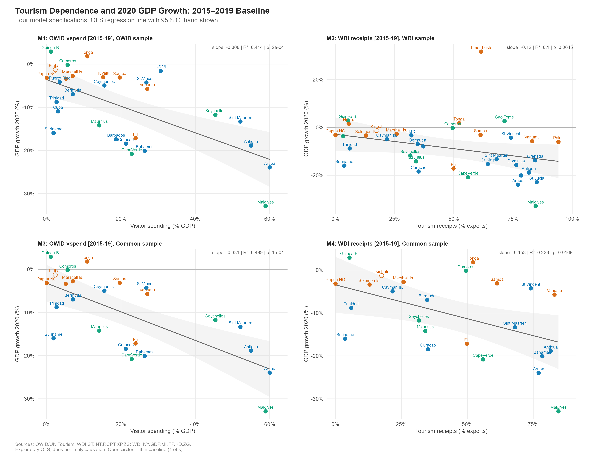
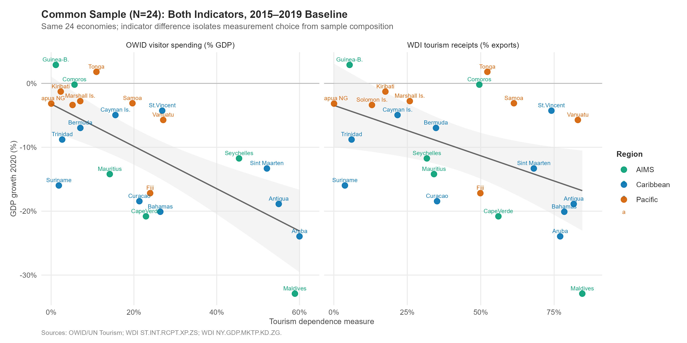
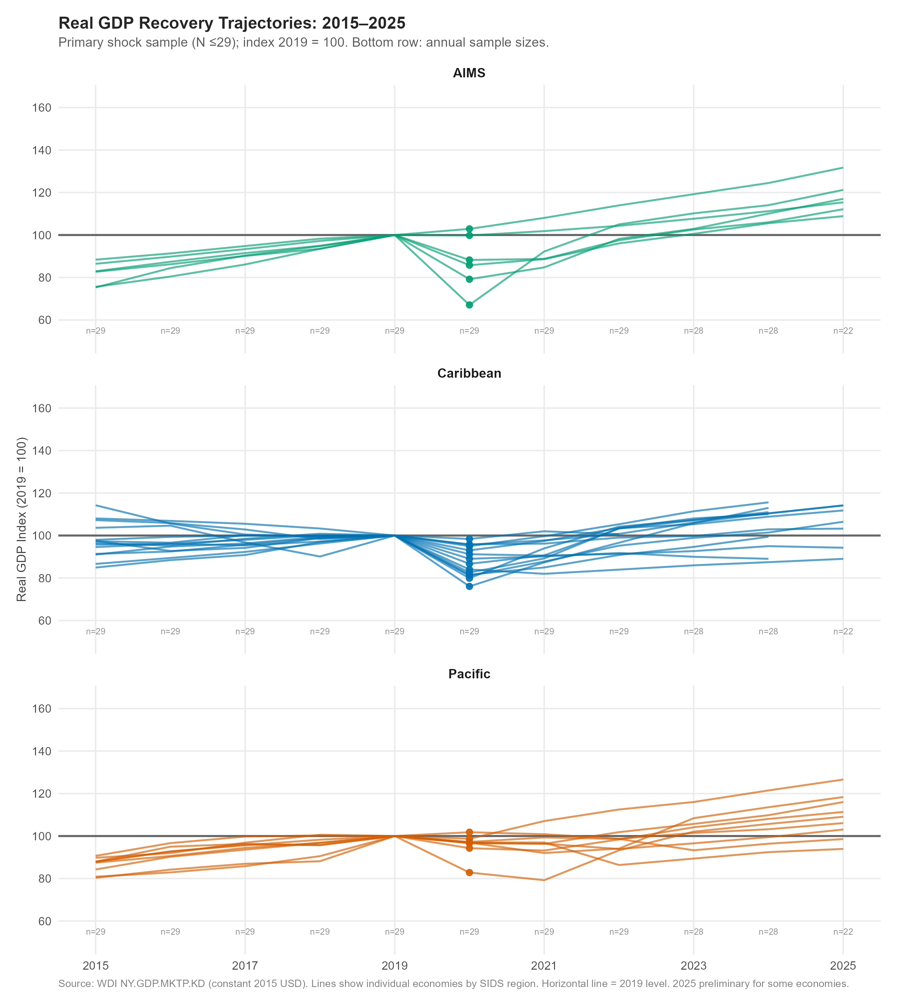
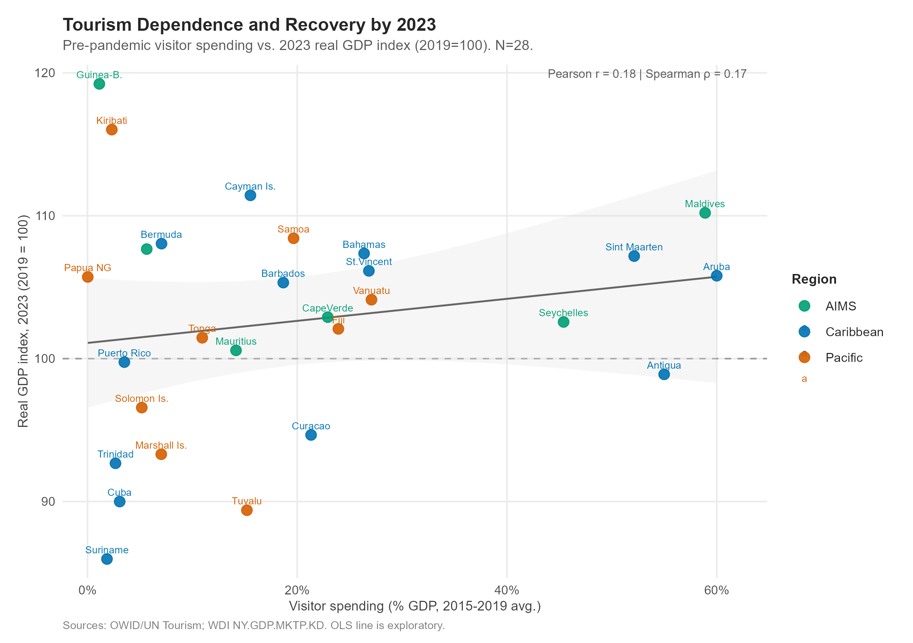

| sids_region | UN Member SIDS | Associate Member SIDS | Other island economy |
|---|---|---|---|
| AIMS | 8 | 0 | 0 |
| Caribbean | 16 | 13 | 1 |
| Pacific | 15 | 5 | 0 |
Technical Analysis
Tourism Dependence and the 2020 Shock: Full Results
Candidate Universe and Sample Definitions
Three fixed samples
Sample membership is defined by 2017–2019 data availability and is fixed — it does not change when the baseline window is varied. Changes in N across specifications reflect only baseline-window coverage within a fixed set of countries.
| Sample | Criterion | N |
|---|---|---|
| Candidate universe | All 58 economies | 58 |
| Tourism-data sample | At least one tourism indicator, 2017-2019 | 48 |
| OWID shock sample | OWID vspend (2017-19) + 2020 GDP growth | 29 |
| WDI shock sample | WDI receipts (2017-19) + 2020 GDP growth | 35 |
| Common sample | Both indicators (2017-19) + 2020 GDP growth | 24 |
| Recovery sample | OWID shock sample + real GDP (2019 + later year) | 29 |
OWID-only economies (in OWID shock sample but not common sample): BRB, CUB, PRI, TUV, VIR.
WDI-only economies (in WDI shock sample but not common sample): DMA, DOM, GRD, HTI, KNA, LCA, NRU, PLW, SGP, STP, TLS.
Tourism Indicator Coverage
Coverage matrix

WDI receipts publication lag
WDI ST.INT.RCPT.XP.ZS has no observations beyond 2020 in the retrieved data. In 2019, 14 of 35 WDI sample members have no receipts observation — their 2017–2019 baseline is computed from 2017 and 2018 only. This lag distinguishes the WDI series from the OWID visitor spending series (available through 2024).
| Indicator | Latest year | 2019 available? | Notes |
|---|---|---|---|
| OWID visitor spending (% GDP) | 2024 | Yes (all sample members) | No lag; updated 2026 |
| WDI receipts (% exports) | 2020 | 14 of 35 missing | ~3-5 year lag; absent 2021-2023+ |
| WDI real GDP (const. 2015 USD) | 2024/2025 | Yes (all sample members) | 2025 preliminary for 22/29 |
Baseline coverage distributions
| Sample | Indicator | Window | 0 obs | 1 obs | 2 obs | 3 obs | 4 obs | 5 obs |
|---|---|---|---|---|---|---|---|---|
| OWID (N=29) | OWID vspend | 2015-19 | 0 | 1 | 0 | 1 | 1 | 26 |
| OWID (N=29) | OWID vspend | 2017-19 | 0 | 1 | 0 | 28 | 0 | 0 |
| OWID (N=29) | WDI receipts | 2015-19 | 4 | 1 | 1 | 2 | 2 | 19 |
| OWID (N=29) | WDI receipts | 2017-19 | 5 | 1 | 2 | 21 | 0 | 0 |
| WDI (N=35) | OWID vspend | 2015-19 | 10 | 2 | 0 | 0 | 1 | 22 |
| WDI (N=35) | OWID vspend | 2017-19 | 11 | 1 | 0 | 23 | 0 | 0 |
| WDI (N=35) | WDI receipts | 2015-19 | 0 | 1 | 0 | 3 | 12 | 19 |
| WDI (N=35) | WDI receipts | 2017-19 | 0 | 2 | 12 | 21 | 0 | 0 |
| Common (N=24) | OWID vspend | 2015-19 | 0 | 1 | 0 | 0 | 1 | 22 |
| Common (N=24) | OWID vspend | 2017-19 | 0 | 1 | 0 | 23 | 0 | 0 |
| Common (N=24) | WDI receipts | 2015-19 | 0 | 1 | 0 | 2 | 2 | 19 |
| Common (N=24) | WDI receipts | 2017-19 | 0 | 1 | 2 | 21 | 0 | 0 |
Indicator Comparison

The Pearson correlation between the two indicators (across economies with both) is approximately 0.77, and the Spearman rank correlation is 0.86. They produce similar rankings but material differences for some economies. The WDI receipts/exports denominator amplifies the apparent dependence of export-intensive small economies, while the OWID visitor spending/GDP denominator captures the share of overall economic activity attributable to visitors.
Eight-Model Shock Analysis
Outcome: 2020 annual GDP growth (%, WDI NY.GDP.MKTP.KD.ZG).
Note: The 2015–2019 primary window was evaluated after the 2017–2019 results were already observed. No window was designated a priori. All eight results are reported.
| Model | Indicator | Window | Sample | N | Slope | 95% CI | R2 | Pearson_r | Spearman_rho | p_raw | p_holm |
|---|---|---|---|---|---|---|---|---|---|---|---|
| 1 | OWID vspend | 2015-19 | OWID (N=29) | 29 | -0.308 | [-0.453, -0.163] | 0.414 | -0.643 | -0.550 | 0.000 | 0.001 |
| 2 | WDI receipts | 2015-19 | WDI (N=35) | 35 | -0.120 | [-0.248, 0.008] | 0.100 | -0.316 | -0.443 | 0.064 | 0.129 |
| 3 | OWID vspend | 2015-19 | Common (N=24) | 24 | -0.331 | [-0.481, -0.181] | 0.489 | -0.699 | -0.655 | 0.000 | 0.001 |
| 4 | WDI receipts | 2015-19 | Common (N=24) | 24 | -0.158 | [-0.285, -0.031] | 0.233 | -0.483 | -0.480 | 0.017 | 0.053 |
| 5 | OWID vspend | 2017-19 | OWID (N=29) | 29 | -0.320 | [-0.465, -0.174] | 0.428 | -0.654 | -0.564 | 0.000 | 0.001 |
| 6 | WDI receipts | 2017-19 | WDI (N=35) | 35 | -0.116 | [-0.242, 0.01] | 0.097 | -0.311 | -0.432 | 0.069 | 0.129 |
| 7 | OWID vspend | 2017-19 | Common (N=24) | 24 | -0.339 | [-0.491, -0.187] | 0.493 | -0.702 | -0.660 | 0.000 | 0.001 |
| 8 | WDI receipts | 2017-19 | Common (N=24) | 24 | -0.160 | [-0.284, -0.037] | 0.248 | -0.498 | -0.491 | 0.013 | 0.053 |
Four-panel figure (2015–2019 baseline)

Common-sample comparison
The common sample (N = 24) holds the country set constant and varies only the indicator. Any difference in results between the two panels below reflects the indicator choice, not sample composition.

Influential observations
| Model | Most influential | Cook’s D | Slope (orig.) | Slope (excl.) | R² (orig.) | R² (excl.) | p (excl.) |
|---|---|---|---|---|---|---|---|
| M1 OWID/2015-19/OWID (N=29) | MDV | 0.392 | -0.308 | -0.251 | 0.414 | 0.309 | 0.002 |
| M2 WDI/2015-19/WDI (N=35) | TLS | 0.287 | -0.120 | -0.141 | 0.100 | 0.224 | 0.005 |
| M3 OWID/2015-19/Common (N=24) | MDV | 0.363 | -0.331 | -0.276 | 0.489 | 0.389 | 0.002 |
| M4 WDI/2015-19/Common (N=24) | MDV | 0.339 | -0.158 | -0.116 | 0.233 | 0.157 | 0.062 |
| M5 OWID/2017-19/OWID (N=29) | MDV | 0.384 | -0.320 | -0.263 | 0.428 | 0.331 | 0.001 |
| M6 WDI/2017-19/WDI (N=35) | TLS | 0.324 | -0.116 | -0.142 | 0.097 | 0.234 | 0.004 |
| M7 OWID/2017-19/Common (N=24) | MDV | 0.362 | -0.339 | -0.284 | 0.493 | 0.402 | 0.001 |
| M8 WDI/2017-19/Common (N=24) | MDV | 0.334 | -0.160 | -0.120 | 0.248 | 0.173 | 0.048 |
Why Timor-Leste influences M2 and M6: Timor-Leste has moderately high WDI tourism receipts as a share of exports but experienced a modest 2020 contraction, making it a structural outlier in the WDI receipts models. Excluding it makes those models stronger, not weaker — a counter-intuitive diagnostic result worth noting.
Coverage-restricted sensitivity (≥3 baseline observations)
| Sensitivity | Window | Indicator | Sample | N | Excluded | Slope | R2 | Spearman | p_raw |
|---|---|---|---|---|---|---|---|---|---|
| S1 | 2015-19 | OWID vspend | OWID | 28 | KIR | -0.302 | 0.397 | -0.522 | 0.0003 |
| S2 | 2015-19 | WDI receipts | WDI | 34 | KIR | -0.116 | 0.092 | -0.432 | 0.0820 |
| S3 | 2015-19 | OWID vspend | Common | 23 | KIR | -0.325 | 0.470 | -0.637 | 0.0003 |
| S4 | 2017-19 | OWID vspend | OWID | 28 | KIR | -0.314 | 0.412 | -0.537 | 0.0002 |
| S5 | 2017-19 | WDI receipts | WDI | 21 | DMA,DOM,GRD,HTI,KIR,KNA,LCA,MHL,NRU,PLW,PNG,SGP,STP,TLS | -0.143 | 0.180 | -0.422 | 0.0554 |
| S6 | 2017-19 | OWID vspend | Common | 23 | KIR | -0.333 | 0.474 | -0.643 | 0.0003 |
Recovery Analysis
Coverage
| year | N with real GDP |
|---|---|
| 2015 | 29 |
| 2016 | 29 |
| 2017 | 29 |
| 2018 | 29 |
| 2019 | 29 |
| 2020 | 29 |
| 2021 | 29 |
| 2022 | 29 |
| 2023 | 28 |
| 2024 | 28 |
| 2025 | 22 |
Trajectories

Recovery status by 2023
| ISO3 | Economy | Region | 2020 (shock) |
GDP idx 2023 |
GDP/cap idx 2023 |
Agg. recovered |
|---|---|---|---|---|---|---|
| COM | Comoros | AIMS | 99.8 | 107.7 | 99.6 | TRUE |
| CPV | CapeVerde | AIMS | 79.2 | 102.9 | 101.3 | TRUE |
| GNB | Guinea-B. | AIMS | 102.9 | 119.2 | 108.9 | TRUE |
| MDV | Maldives | AIMS | 67.1 | 110.2 | 102.2 | TRUE |
| MUS | Mauritius | AIMS | 85.8 | 100.6 | 102.0 | TRUE |
| SYC | Seychelles | AIMS | 88.3 | 102.6 | 83.6 | TRUE |
| ABW | Aruba | Caribbean | 76.1 | 105.8 | 107.6 | TRUE |
| ATG | Antigua | Caribbean | 81.1 | 98.9 | 96.8 | FALSE |
| BHS | Bahamas | Caribbean | 79.9 | 107.4 | 106.1 | TRUE |
| BMU | Bermuda | Caribbean | 93.0 | 108.0 | 107.1 | TRUE |
| BRB | Barbados | Caribbean | 82.6 | 105.3 | 104.9 | TRUE |
| CUB | Cuba | Caribbean | 89.1 | 90.0 | 91.5 | FALSE |
| CUW | Curacao | Caribbean | 81.6 | 94.7 | 96.4 | FALSE |
| CYM | Cayman Is. | Caribbean | 95.0 | 111.4 | 102.7 | TRUE |
| PRI | Puerto Rico | Caribbean | 95.8 | 99.8 | 102.8 | FALSE |
| SUR | Suriname | Caribbean | 84.0 | 86.0 | 82.8 | FALSE |
| SXM | Sint Maarten | Caribbean | 86.7 | 107.2 | 101.2 | TRUE |
| TTO | Trinidad | Caribbean | 91.2 | 92.7 | 92.4 | FALSE |
| VCT | St.Vincent | Caribbean | 95.7 | 106.1 | 109.1 | TRUE |
| VIR | US VI | Caribbean | 98.4 | NA | NA | FALSE |
| FJI | Fiji | Pacific | 82.8 | 102.1 | 101.1 | TRUE |
| KIR | Kiribati | Pacific | 98.7 | 116.0 | 108.5 | TRUE |
| MHL | Marshall Is. | Pacific | 97.2 | 93.3 | 105.8 | FALSE |
| PNG | Papua NG | Pacific | 96.8 | 105.7 | 97.8 | TRUE |
| SLB | Solomon Is. | Pacific | 96.6 | 96.6 | 87.9 | FALSE |
| TON | Tonga | Pacific | 101.8 | 101.5 | 102.5 | TRUE |
| TUV | Tuvalu | Pacific | 97.0 | 89.4 | 96.4 | FALSE |
| VUT | Vanuatu | Pacific | 94.3 | 104.1 | 94.9 | TRUE |
| WSM | Samoa | Pacific | 96.9 | 108.4 | 105.0 | TRUE |
Recovery vs. tourism dependence

The absence of a significant association between tourism dependence and the 2023 recovery index (Figure 6) is not evidence that tourism dependence is harmless or that the shock was ultimately irrelevant. It reflects the fact that the same sectors that collapsed in 2020 — international tourism and hospitality — were also the sectors that recovered as travel rebounded. Economies with high visitor spending contracted sharply in 2020 and rebounded sharply from 2021 onward, producing a near-symmetrical pattern in aggregate GDP terms.
Per-capita recovery tells a more nuanced story: 17 of 28 economies had recovered GDP per person by 2023, compared with 19 of 28 for aggregate GDP. The 2-economy gap reflects continued population growth in some Pacific economies, where total output recovered but output per person had not yet returned to 2019 levels.
See Data Dictionary for source documentation and Methodology for research design.